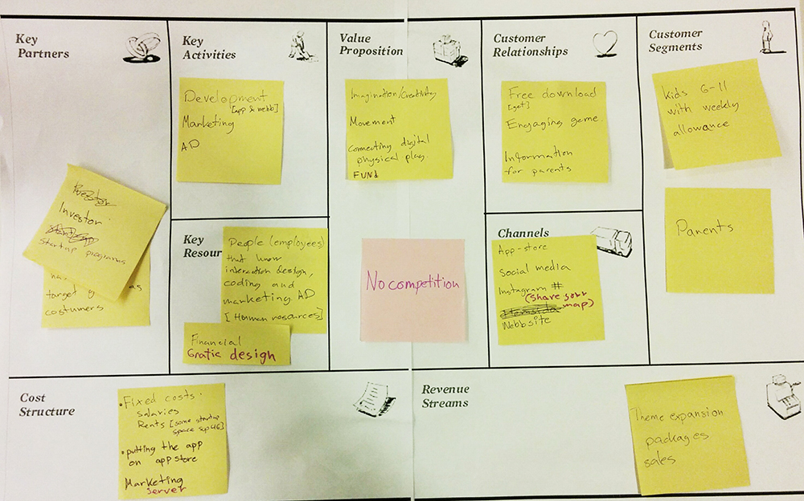

ImagiMap is a mobile application for kids. In the app you can create your own fantasy world in the real world. ImagiMap is a location based game, you build things like houses, castles and roads on your current gps position on a map. There is no competition just creativity and open-ended play.
ImagiMap was created in the course Interaction design 2. The inspiration came from geocaching, games like the sims and concepts evolved earlier in the course. Initially, we wanted to do a treasure hunt game. In this game the part about making a fantasy world out of the map was just a feature. Later we realised that this part of the concept was really strong and choose to go on with it.
The theme for this project was comercial interaction design, we had a focus on both interaction design and commercial viability. We made the bussines plan, with the business model canvas

Bussiness model canvas
For presenting we made a prototype in with pixate Before entering the application you get to choose your avatar. When you create an imagination world you see your avatar on a map.
Then you can choose to build something. It is also possible to buy expansion packages in the application to get accessibility to more objects from a specific theme.
When you choose to build something you first choose the size of the item, then you shake the phone for building it.
Extra value is added by the possibility to add a friend to one of your maps and create the imagination map together.
By connecting digital and physical play we augment the imagination and creativity while encouraging movement outdoors!